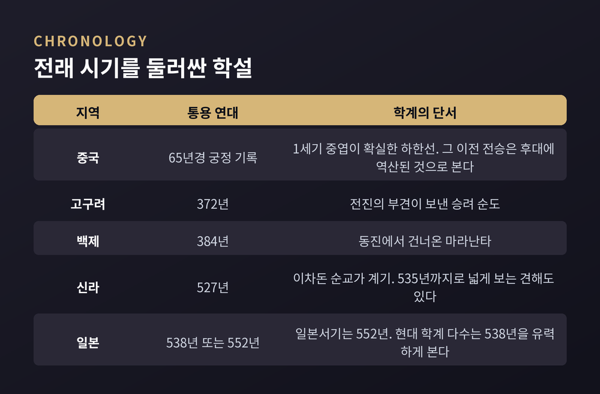
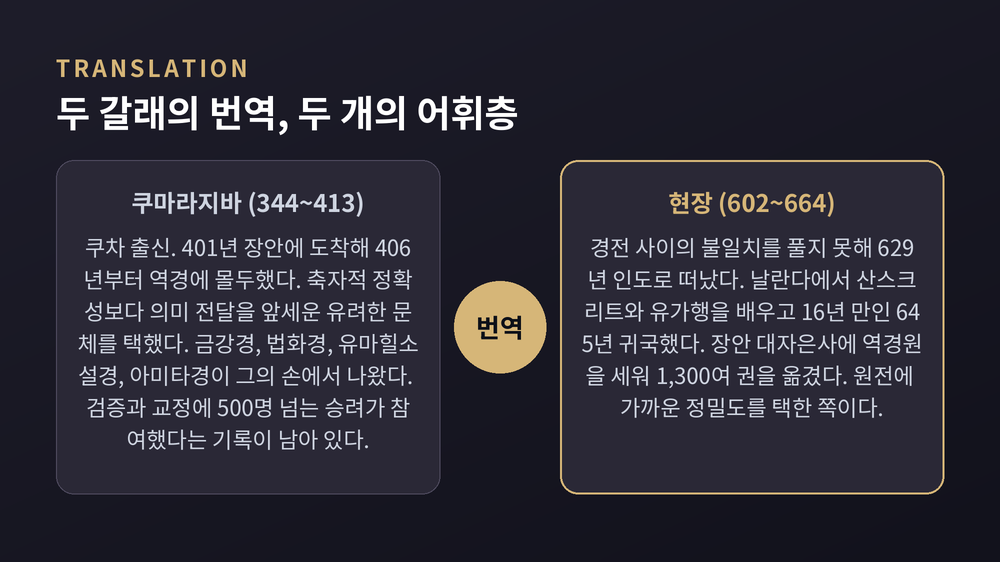
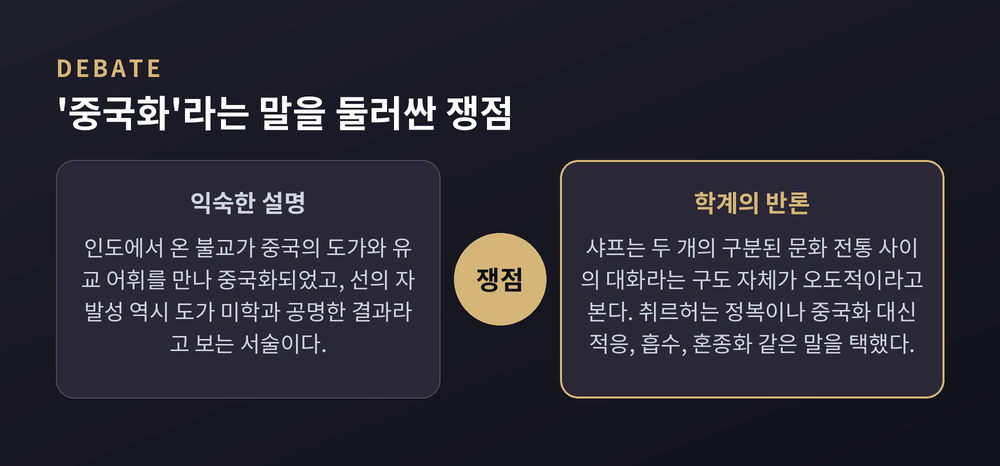
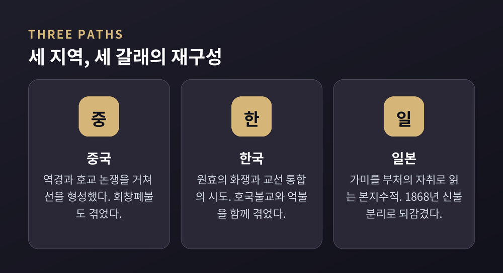

종교학으로 읽는 전래와 재구성 — 격의와 역경, 효를 둘러싼 논쟁, 선의 형성, 화쟁과 통불교 담론, 신불습합, 그리고 토착화라는 말 자체를 둘러싼 방법론 논쟁
이번 글에서는 인도에서 출발한 불교가 중국과 한국, 일본에 닿으며 어떻게 달라졌는지를 종교학의 시선으로 정리해 보겠습니다. 어떤 형태가 더 순수한지 가리는 글이 아닙니다. 낯선 가르침이 낯선 땅의 언어와 규범을 만났을 때 무슨 일이 벌어졌는지, 그 과정을 따라가 보려 합니다.
세 줄 요약
가장 오래된 기록부터 보겠습니다.
5세기에 범엽(398~446)이 엮은 『후한서』에 불교에 관한 중국 최고(最古)의 세속 기록이 담겨 있습니다. 65년경 후한 명제의 낙양 궁정과, 그 이복동생인 초왕 유영의 팽성 궁정에서 불교가 행해졌다는 대목입니다.
흥미로운 것은 그 서술 방식입니다. 유영은 황로(黃老) 도교에 깊이 심취해 있었고, 동시에 "재계하고 부처에게 제사를 올렸다"고 적혀 있습니다. 65년 명제의 조서에도 "초왕은 황로의 미묘한 말을 외고, 부처에게 온화한 제사를 정성껏 올린다"는 구절이 나옵니다.
네덜란드의 불교학자 에릭 취르허는 이렇게 평가했습니다. 유영과 그 궁정 신자들에게 '불교' 의례는 기존 도교 실천의 변형 정도로 여겨졌을 가능성이 크다고요. 그리고 이 뒤섞임이 한대 불교 전체의 특징이라고 덧붙였습니다.
시작부터 순수한 형태로 들어온 것이 아니었다는 뜻입니다.
우리에게 익숙한 '명제의 꿈' 이야기는 조금 다릅니다. 황제가 머리에서 빛이 나는 금인(金人)을 꿈꾸고 서역에 사신을 보냈으며, 그들이 『사십이장경』을 가져왔고, 이를 기려 백마사를 세웠다는 서사입니다.
그런데 사신 파견 연도가 자료마다 60년, 61년, 64년, 68년으로 엇갈립니다. 귀환도 3년 후 또는 11년 후로 다릅니다. 『후한서』의 「명제 본기」에는 이 이야기가 아예 없고, 「서역전」에만 "지금 전하는 이야기"라는 단서와 함께 실려 있습니다.
학계는 이 이야기들이 모두 3세기 중엽 『사십이장경』 서문에서 파생된 것으로 보고, 『사십이장경』 번역 자체도 실제로는 100년 이후일 가능성이 높다고 봅니다.
경로에 대해서도 정설이 없습니다. 량치차오와 폴 펠리오는 남중국을 통한 해로설을 지지했고, 탕융퉁은 월지를 거친 육로설을 지지했습니다. 최근 룽신장은 간다라 불교 사본 등 새 자료를 포함해 재검토한 뒤, 해로설은 뒷받침 자료가 부족하며 서북 인도의 대월지에서 육로로 왔다는 설이 가장 개연성이 높다고 결론지었습니다. 다만 이것도 확정은 아닙니다.

전래보다 먼저 해결해야 할 문제가 있었습니다. 산스크리트를 한문으로 어떻게 옮길 것인가.
문헌으로 확인되는 최초의 한역은 148년입니다. 파르티아 왕자 출신 안세고가 낙양에 도착해 기초 교리와 선정, 아비달마 경전을 옮겼습니다. 대승 경전을 처음 널리 전한 것은 간다라 출신 쿠샨족 승려 지루가참으로, 164년에서 186년 사이에 활동했습니다.
이 시기의 번역 방식을 흔히 격의(格義)라고 부릅니다. 통설은 이렇습니다. 사람들이 익숙한 도가 용어를 빌려 낯선 불교 개념을 설명했다는 것. 공(空)을 무(無)로, 법(dharma)을 도(道)로, 진여를 자연(自然)으로 옮기는 식입니다.
다만 여기에 반론이 있습니다. 언어학자 빅터 메어는 2012년 논문에서, 20세기 불교학자 다수가 격의를 오해했다고 지적했습니다. 격의는 산스크리트 전문용어를 도가 어휘로 번역하는 방법이 아니라, 인도에서 대량으로 들어온 '숫자로 매겨진 항목 목록'을 중국 고전의 비슷한 목록과 짝지어 설명하던 단명한 시도였다는 것입니다. 그의 표현대로라면 오늘의 통용 이해는 근대 학문이 만들어낸 것에 가깝습니다.
어느 쪽이든, 당대에도 이 방식을 문제 삼은 사람이 있었습니다. 도안(312~385)입니다. 그는 경전의 숫자 범주를 세속 문헌 용어와 짝짓는 방식을 공식적으로 배격했습니다.
판을 바꾼 사람은 쿠마라지바(344~413)입니다.
타클라마칸 사막 북쪽 가장자리의 소국 쿠차 출신입니다. 중앙아시아와 인도를 두루 다니며 여러 언어와 상좌부·대승 전통을 익혔습니다. 401년 장안에 도착했고, 406년부터 대사(大寺)에 정착해 역경에 몰두하다 413년 4월 그곳에서 71세로 입적했습니다.
검증과 교정에 500명 넘는 승려가 참여했다는 기록이 남아 있습니다. 『금강경』, 『법화경』, 『유마힐소설경』, 『아미타경』이 모두 그의 손에서 나왔습니다. 그의 번역은 축자적 정확성보다 의미 전달을 앞세운 유려한 문체로 평가됩니다. 읽히는 문장을 만든 것입니다.
정반대 방향을 택한 사람이 현장(602~664)입니다.
그는 중국 스승들과 함께 경전 사이의 불일치를 해결하지 못했습니다. 629년 인도로 떠난 이유입니다. 날란다 승원에서 산스크리트와 인도 사상을 배웠고, 636년 실라바드라의 제자가 되어 유가행 계보에 들어갔습니다. 16년 만인 645년에 돌아와 장안 대자은사에 역경원을 세우고 1,300여 권을 옮겼습니다.
예전엔 읽히는 번역이 필요했습니다. 현장의 시대엔 정확한 번역이 필요했습니다. 두 방향은 이후 동아시아 불교 어휘의 두 층으로 남았습니다.

교리 논쟁보다 먼저 터진 것은 윤리 논쟁이었습니다.
중국 측 비판은 구체적이었습니다. 승려는 부모의 집을 떠납니다. 혼인하지 않고 자손을 남기지 않으니 조상 제사가 끊깁니다. 그리고 삭발합니다. 머리카락은 부모가 준 것이므로 자르지 않는다는 효의 규범에 정면으로 어긋나는 행위였습니다.
이에 답한 대표적 문헌이 『모자이혹론(牟子理惑論)』입니다. 성립 시기는 2세기설과 3세기 말~5세기설이 함께 제시되어 확정되지 않았습니다.
형식은 문답체입니다. 가상의 인물 '모자'가 불교를 향한 서른일곱 개의 반론에 하나씩 답합니다. 반론에는 승려가 가족을 떠나 효를 저버린다는 것, 독신이 조상의 대를 끊는다는 것이 포함됩니다.
주목할 점은 답변의 재료입니다. 모자는 반박의 근거로 유교 경전과 『도덕경』을 인용합니다. 외래 종교를 변호하기 위해 토착 고전의 권위를 빌린 것입니다. 논지도 정면 대결이 아니라 재해석입니다. 표면상 승려는 부모를 버린 듯 보이지만 실제로는 부모와 자신을 함께 깨달음의 길로 이끌고 있다는 설명입니다.
양보만 한 것은 아닙니다.
404년, 여산의 혜원(334~416)이 『사문불경왕자론(沙門不敬王者論)』을 지었습니다. 동진의 실력자 환현이 불교를 억누르려 하던 때였습니다. 많은 사원이 헐렸고 다수의 승려가 환속했습니다.
혜원은 승려가 군주에게 절할 의무가 없다고 논증했고, 그 주장을 관철시켰습니다.
동시에 이 글은 설득의 문서이기도 했습니다. 그는 업보와 정토 왕생을 믿는 사람들이 오히려 좋은 백성이 된다고 썼습니다. "부처의 도를 기뻐하는 이는 반드시 먼저 부모를 섬기고 군주에게 순종한다"는 구절도 남겼습니다. 환현은 혜원을 존중해 서신으로 논쟁을 이어갔습니다.
지킬 것은 지키고 조정할 것은 조정한 셈입니다. 종교학은 이런 장면을 '변질'이 아니라 경계 협상이라고 부릅니다.
물론 협상이 언제나 통한 것은 아닙니다. 840년부터 846년 사이 당 무종 치하에서 대규모 억압이 진행됐습니다. 회창폐불입니다. 기록상 사찰 4,600여 곳이 헐렸고, 승니 260,500명이 환속당했으며, 광대한 면세지가 몰수됐습니다. 842년 칙령은 50세 미만 승니에게 환속해 노동하고 혼인하고 납세하라고 명했습니다.
동기는 종교적이라기보다 재정적이었다고 분석됩니다. 군비 부담과 화폐 부족 속에서 면세지와 불상·종에 묶인 금속, 비생산 인구가 표적이 됐습니다. 846년 무종이 죽자 후계 황제가 대사면을 선포하며 끝났습니다.
선은 6세기에서 9세기에 걸쳐 형성됐습니다. 보리달마에서 혜가를 거쳐 혜능(638~713)으로 이어지는 계보로 이야기됩니다.
보리달마부터가 흥미롭습니다. 가장 이른 언급은 양현지의 기록으로, 520년경 낙양에서 만난 중앙아시아 출신 승려라고 되어 있습니다. 중국 선종 문헌은 그를 '벽안호(碧眼胡)', 곧 푸른 눈의 이방인이라 부릅니다. 소림 무술을 창시했다는 이야기는 17세기 『역근경』에서 나온 위작 서사로, 20세기에 대중화된 오류라는 것이 정설입니다.
혜능에 이르러 선은 뚜렷한 독자 운동이 됩니다. 그는 중국 교학 전통이 공들여 만든 교판(敎判), 곧 가르침을 등급으로 분류하는 작업의 가치를 부정했습니다. 그리고 돈오(頓悟)를 개인의 준비 상태의 문제로 돌려놓았습니다. 8대 조사 마조도일(709~788)은 여기서 더 나아가 "평상심이 곧 도"라고 말했습니다.
이 대목에서 흔히 등장하는 설명이 있습니다. 선의 자발성과 자연스러움이 도가의 미학과 깊이 공명했다는 것입니다. 실제로 역경가들이 도(道), 무(無), 자연(自然) 같은 어휘를 끌어썼다는 점도 근거로 제시됩니다.
다만 여기서 한 걸음 물러설 필요가 있습니다.
로버트 샤프는 불교의 중국화를 "두 개의 뚜렷이 구분되는 문화 전통 사이의 대화"로 파악하는 것이 역사적으로도 해석학적으로도 오도적이라고 봅니다. 인도에서 중국으로의 깔끔한 '전달'은 애초에 없었으므로, 중국 불교는 처음부터 중국적 현상으로서 그 자체의 조건에서 다뤄야 한다는 것입니다. 그는 이렇게 정리합니다.
"순수하거나 불순물 없는 불교란 분석적 추상물에 지나지 않는다."
취르허도 비슷합니다. 그는 자기 책 제목이 함축한 '정복'이나 '중국화' 대신 적응, 문화접변, 선택, 흡수, 재구조화, 혼종화 같은 표현을 선호했습니다.

한반도의 전래는 고구려가 먼저였습니다. 372년, 전진의 부견이 보낸 승려 순도가 처음 전했습니다. 백제는 384년, 동진에서 온 마라난타를 통해서였습니다.
신라는 늦었습니다. 527년 조정 관리 이차돈이 법흥왕 앞에서 자신이 불교도임을 밝히고 순교했고, 이를 계기로 공인이 이루어집니다. 다만 공인 시점을 527년으로 볼지 535년까지 걸쳐 볼지는 자료마다 다릅니다.
한국 불교를 이야기할 때 빠지지 않는 인물이 원효(617~686)입니다.
그의 화쟁(和諍)은 두 전제 위에 서 있습니다. 첫째, 모든 논쟁은 언어에서 발생한다는 것. 중관학의 이제(二諦) 구분에서 온 통찰입니다. 말로 표현되는 세속제와 표현될 수 없는 승의제가 있고, 언어는 이해를 돕지만 전체를 담지 못합니다. 둘째, 각 학파가 부처 가르침의 한 면씩을 담고 있다는 것. 『법화경』의 장님과 코끼리 비유에서 착안했습니다. 장님들이 코끼리의 각 부분을 만지고 서로 다른 결론에 이르듯, 각 학파는 일부만 알면서 자기 해석만 옳다고 주장한다는 것입니다.
고려에서는 통합의 시도가 이어졌습니다. 왕자 출신 학승 의천(1055~1101)은 천태를 독립 종파로 세우고 교관겸수(敎觀兼修), 곧 교학 연구와 관법 수행을 함께 닦을 것을 주장했습니다. 원효의 이름을 '화쟁'과 처음 연결지어 기록한 인물도 의천입니다. 지눌(1158~1210)은 정혜쌍수(定慧雙修)를 내세워 선정과 지혜의 통합 수행을 강조했습니다. 오늘날 한국 최대 종단인 조계종은 그가 이끈 흐름에 닿아 있습니다.
국가와의 거리도 가까웠습니다. 고려 건국 이래 승병이 거란과 몽골, 홍건적, 왜구에 맞서 동원됐습니다. 팔만대장경은 1231년 시작된 몽골 침입이라는 국난 속에서 각판이 시작되어 81,352판의 목판으로 완성됐고, 800년 넘게 보존되어 왔습니다.
그런데 조선이 서자 상황이 뒤집힙니다. 성리학 국가에서 불교는 5세기에 걸친 억압을 받았습니다. 승려의 신분은 최하층으로 떨어졌고, 주요 도성 안 사찰은 금지됐습니다.
여기서 한 가지 짚어야 할 것이 있습니다. '통불교(通佛敎)'라는 말입니다.
한국 불교의 특징을 회통과 융합으로 요약하는 이 개념은 오래된 전통처럼 보이지만, 학계의 설명은 조금 다릅니다. 일제강점기에 원효의 화쟁 철학이 통불교 개념과 결합했고, 이는 한국 불교를 다른 지역 전통보다 우위에 놓아 자긍심을 고취하는 기능을 했다는 것입니다. 최남선 등은 일본 측 시각에 대한 대항 서사로 원효를 배치했습니다.
광복 후 화쟁의 의미는 '통일'에서 '화해'로 옮겨갑니다. 1985년 심재룡이 이 개념을 본격적으로 문제 삼기 전까지, 통불교론은 엄밀한 검토 없이 통용됐습니다. 이후 해외에서 훈련받은 연구자들은 통불교가 민족주의 사학의 산물이며 역사적 구성물이라고 더 강하게 주장했습니다.
물론 반론도 있습니다. 원효와 의천, 지눌의 회통 지향 자체는 문헌에 실재한다는 점입니다. 쟁점은 그 개별 사실이 아니라, 그것을 '한국 불교의 본질'로 묶어내는 20세기의 서술 방식입니다.
일본 전래의 출발점은 백제입니다.
『일본서기』는 552년 백제 성왕이 긴메이 천황에게 사절을 보내 석가모니 불상과 번, 경전을 전했다고 적습니다. 그러나 『원흥사가람연기』 등 다른 자료는 538년을 제시하고, 현대 학계 다수는 538년을 더 유력하게 봅니다. 사학계는 『일본서기』의 이 대목에 후대의 윤색 흔적이 있다는 데 대체로 동의합니다. 다만 연대와 무관하게, 성왕이 538년에서 552년 사이 어느 시점에 야마토 왕실에 불상과 경전을 보냈다는 사실 자체는 받아들여집니다.
일본 토착화의 핵심 개념은 본지수적(本地垂迹)입니다.
일부 가미(神)는 불·보살의 지역적 현현이라는 이론입니다. 본지는 불·보살의 원래 자리, 곧 본질적 참모습을 뜻하고, 수적은 중생 구제를 위해 현상 세계에 임시로 드러낸 '자취'를 뜻합니다. 최초 용례로 지목되는 것은 901년 『삼대실록』의 한 대목입니다. 불·보살이 때로는 왕으로, 때로는 가미로 자신을 나타낸다는 서술입니다.
이 이론은 헤이안기 천태·진언 사상에서 자라나 가마쿠라기에 양부신도와 산왕신도 체계로 굳어집니다. 체계화된 적은 없지만 지극히 광범위하게 퍼져 신불습합(神仏習合)이라는 구조물의 요석이 됐습니다. 1868년 에도 시대가 끝날 때까지, 같은 건물이 신사이자 절로 쓰이는 일이 흔했습니다.
가마쿠라 시대(1185~1333)에는 종파 분화가 일어납니다. 정토 계열에서 호넨(1133~1212)의 정토종, 신란(1173~1262)의 정토진종, 잇펜(1239~1289)의 시종이 나왔습니다. 선 계열에서는 에이사이(1141~1215)의 임제종과 도겐(1200~1253)의 조동종이 각각 중국 임제·조동 계열에서 갈라져 나왔습니다. 니치렌(1222~1282)은 『법화경』의 절대적 우위를 주장하며 그 제목을 외는 것을 구원의 방편으로 제시했습니다.
여기서도 통설은 흔들립니다. 역사학자 구로다 도시오(1926~1993)의 현밀체제론(顕密体制論)입니다.
구로다에 따르면 중세 일본에서 신불교 종파들은 오히려 주변적이었습니다. 가장 많은 사찰과 승려, 물적 자원을 통제하며 주류로 인정받은 것은 구불교, 곧 현밀(顕密) 불교였습니다. 그는 현밀 불교를 중세 일본의 정통으로, 신불교 운동을 이단적·개혁적 운동으로 위치시켰습니다. 신불교는 일본 불교의 절정이 아니라 현밀 규범에서의 이탈이라는 것입니다. 이 모델은 '가마쿠라 신불교'라는 용어 자체의 재검토를 불러왔습니다.
그리고 마지막 반전이 있습니다.
1868년 메이지 신정부는 신불판연령으로 신불분리(神仏分離)를 단행합니다. 가미와 부처를, 신사와 사찰을 갈라놓는 조치였고, 목적은 천황의 신성한 지위를 신도 신앙에 따라 재확립하는 것이었습니다. 이 명령은 폐불훼석(廃仏毀釈)이라는 격렬한 배불 운동으로 번졌습니다. 수천 사찰이 강제 폐쇄됐고 토지가 몰수됐으며, 다수의 승려가 환속하거나 신관으로 전환됐습니다. 서적과 불상, 법구가 파괴됐습니다.
1873년경 이 과정은 정체됐고 정부의 지원도 완화됐습니다. 그리고 오늘날에도 분리는 부분적으로만 이루어져 있습니다. 주요 사찰 다수가 수호 가미를 모신 작은 신사를 두고 있고, 관음 같은 불교적 존재가 신사에서 숭경되기도 합니다.
천 년 넘게 얽힌 것을 법령으로 되돌리려 한 시도였고, 결과는 절반의 성공이었습니다.

마지막으로 용어 문제를 짚겠습니다. 이 글에서 계속 쓴 '토착화'라는 말 자체가 종교학의 논쟁 대상입니다.
핵심은 두 용어에 이미 가치판단이 박혀 있다는 점입니다. 혼합주의(syncretism)는 "종교가 섞이는 것은 나쁘다"고 말하기 위한 좋은 단어인지, 아니면 "섞여도 괜찮다"고 말하기 위한 나쁜 단어인지 되묻는 연구들이 있습니다. 한 입장은 이렇게 정리합니다. 혼합은 주어진 조건이며, 그것을 좋게 보느냐 나쁘게 보느냐는 '섞였다'는 사실이 아니라 그 밖의 기준에 달려 있다고요.
그렇다면 '토착화(inculturation)'는 안전할까요. 그렇지도 않습니다. 혼합주의를 피해 토착화나 상황화라는 말을 쓰면, 부정적 선입견이 긍정적 선입견으로 옮겨갈 뿐 가치판단 자체는 그대로 남는다는 비판이 있습니다.
실천적 긴장도 지적됩니다. 적합성을 좇다 보면 혼합에 빠지고, 혼합을 피하려다 보면 무관함에 빠진다는 것입니다.
이 논쟁은 주로 기독교 신학 맥락에서 발전했지만, 개념 도구로서 불교의 동아시아 사례에도 그대로 적용됩니다. 그리고 앞서 본 샤프의 논지와 정확히 겹칩니다. 순수한 원본을 상정하는 것 자체가 분석적 허구일 수 있다는 지점에서요.
저는 여기서 어느 편이 옳다고 말할 생각이 없습니다. 다만 학자들이 왜 이 단어들을 조심스럽게 다루는지는 전할 만하다고 생각합니다.
정리하면 이렇습니다.
인도에서 출발한 가르침은 한 번의 여행으로 동아시아에 도착하지 않았습니다. 번역어를 고르는 자리에서, 삭발과 제사를 두고 다투는 자리에서, 왕 앞에 설지 말지를 정하는 자리에서 매번 다시 결정됐습니다. 그리고 그 결정들은 중국에서, 한국에서, 일본에서 각기 다르게 내려졌습니다.
한계도 있습니다. 이 글에서 다룬 연대와 계보는 상당수가 확정되지 않았고, 학계의 해석도 계속 바뀌는 중입니다. 저 역시 그 논쟁의 결론을 알지 못합니다.
그럼에도 하나는 분명해 보입니다 — 우리가 '원래의 불교'라고 부르는 지점은, 찾아 들어갈수록 뒤로 물러납니다.
그렇다면 무엇이 남느냐고 물으신다면, 남는 것은 만남의 기록이라고 답하겠습니다.